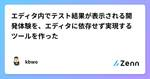
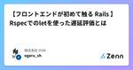
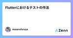
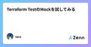
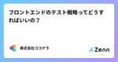
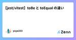
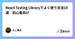

Zennの「Test」のフィード
フィード
Goでサーバーを立ち上げてテストを実行するときはbufconnを使おう 1
1
Zennの「Test」のフィード
Go で HTTP サーバーを立ててインテグレーションテストを行いたい場合がありますよね。 そのまま実装すると実際に OS にポートを確保してもらい、そのポート経由で通信する経路のテストになります。 しかしこの方法にはいくつかの問題が発生する可能性があります。 OS への呼び出しが増えるため、並列でテストを実行すればするほどテストが遅くなる。 実際にポートを確保して通信するため、問題発生時にネットワークレイヤーの考慮が必要になる可能性がある。 ポートを固定で指定していた場合、並列でテストを回すのが難しい。 アプリケーションからポートの確保を行う経路のテストを確実に行いたいケースは別と...
1日前
Goでtime.Now()を使用している箇所のテストについて 1
Zennの「Test」のフィード
概要 time.Now()を使用している箇所のテストがしづらいと感じたのでその際のメモ 結論：contextにtime.Now()で生成する方法を採用 既存のコード func Hoge() { todo := GetTodo() if IsTimeAfter(todo.StartTime) { ... } } func IsTimeAfter(startTime time.Time) { currentDate := time.Now() // テストを実行する時刻に依存する。現在日時を固定にしたい。 return startTime.After(currentD...
3日前

エディタ内でテスト結果が表示される開発体験を、エディタに依存せず実現するツールを作った 39
Zennの「Test」のフィード
エディタ上でテストのエラーを表示することができるLSPサーバとその周辺ツールを作りました。 https://github.com/kbwo/testing-language-server 動機 数ヶ月前にこの記事を見ました。 Wallaby.jsを使ってフロントエンド開発のテストを効率化しよう - Findy Tech Blog https://tech.findy.co.jp/entry/2024/04/15/100523 エディタ上でリアルタイムにテスト結果が反映される開発体験が大変魅力的に見えます。 私は普段Neovimを使用しているので、この記事を見てすぐ、Neovimでも同...
3日前

【フロントエンドが初めて触る Rails 】Rspecでのletを使った遅延評価とは
Zennの「Test」のフィード
概要 業務でRSpecを使ってテストを実装している際に、let!(:hoge)でモデルのインスタンス生成処理を書けばいいんだな、と思いながら実装していました。すると、先輩エンジニアから「letとlet!には遅延評価の違いがある」との助言をもらいました。 その時は、「どんな場合に使い分ければいいんだ？」とすぐにはピンとこなかったので、今回しっかり調べて知識として整理してみようと思います。 letとlet! let：実際に参照される時に評価されインスタンスが生成される。 遅延評価 let!：テストが実行される前にすぐに評価されインスタンス生成される。 即時評価 ...
5日前
組み込み単体テスト実践入門
Zennの「Test」のフィード
多くの組み込みソフトウェア開発現場では、テストはすべて手動で行われ、デグレやリリース遅延が頻繁に発生しています。「組み込みは自動テストが難しい」と考える人が多いですが、私は担当製品に単体テストとCIを導入し、バグの早期発見と品質向上を実現しました。 本書では、組み込み特有のハードウェア依存を解消し、単体テストを導入する方法をGoogle Testを使ったサンプルコードを交えながら紹介します。手動テストから脱却し、効率的にテストを行いたい方に参考にしていただければ幸いです。 すべてのサンプルコードはGitHub上で公開しています。 https://github.com/kimatata/embeded-testing-guide
5日前
ソフトウェアをカイゼンする50のアイデア：読書ノート
Zennの「Test」のフィード
はじめに 私はチームでの品質について考える時、具体的なフローや禁則だけでは難しいのではないかと感じるシーンがあります。それは項目として具体性が不足している時に効果が弱まること、文字数の制限によって局所最適化的となること、強く限定することはハックされ形骸化することを懸念しているからです。 現在ではアプローチとして、メンバーがどのように考えているかの意見交換を大事にしています。 今回取り上げる「ソフトウェアをカイゼンする50のアイデア」から私が気になった項目を取り上げ、意見交換の種となればと思います。 取り上げたアイデア群 「関係者と品質に関する全体像を定義しよう」 これを取り上...
8日前
テストから始めるWebアクセシビリティ 3
Zennの「Test」のフィード
自己紹介 すずきゆーだい(@szkyudi)です。株式会社ゆめみという会社でWebフロントエンドエンジニアをやっています。秋になると柿を200個食べます。 アクセシビリティは誰のためにあるか アクセシビリティは特定の人々だけでなく、あらゆる人のためにあるものです。 というような言葉はよく耳にすると思います。ただ、この言葉にピンときていない方々も多いと思いますし、私自身、まだまだ理解を深めていく必要があると感じています。 そこで、この記事では、エンジニア自身がアクセシビリティ向上の恩恵を受ける当事者であることを認識してもらうとともに、少しでもアクセシビリティに興味を持ってもらうため...
8日前

Flutterにおけるテストの作法
Zennの「Test」のフィード
はじめに 自分自身はWebエンジニア出身でFlutterでの開発経験はほぼ皆無なのですが、個人的に最近Flutterの勉強を始めています。 今回はFlutterにおいてテストはどう書いていくのがよいのか調べてみました。 公式ドキュメント テストについては公式ドキュメントが一番よくまとまっています。概要を掴むには日本語の記事でもよいですが、まずは公式のものからあたるのが良いです。 テストのサンプルはこちらのcodelabで学ぶことができます。 https://codelabs.developers.google.com/codelabs/flutter-app-testing?hl...
9日前

Terraform TestのMockを試してみる
Zennの「Test」のフィード
本記事の想定読者 Terraform Testって何？Terraformにネイティブなtestコマンドなんてあったっけ。。。？🤔な方。 Terraformのtestはちょっと使ったことがあるけどTerraform TestのMockってなに？👀な方。 はじめに TerraformのTest みなさん、Terraformコードのテストはどうしていますか？ Terraformは言わずと知れたIaCツールですが、実はそのTest機能は長らく実装されておらず、サードパーティのツールを使ってテストしたり、お手製スクリプトでテストしたりされるケースが多かったのではないかなと思います。...
9日前

フロントエンドのテスト戦略ってどうすればいいの？ 116
Zennの「Test」のフィード
こんにちは！ 株式会社ココナラの法律相談事業部でWebエンジニアをしている 原井夏樹 です。 ココナラ法律相談というプロダクトのフロントエンド・バックエンド開発を担当しています。 よければXのフォローをお願いします！喜びます！ @superhahnah この記事ではフロントエンドテストの導入にあたり、私たちのプロダクトではどんなテスト戦略をとるべきかを調査・検討して得られた知見を共有します。 読んでくださる皆さんの参考になれば幸いです。 そもそもフロントエンドのテストって色々ありすぎてよくわからん 「〇〇テスト」っていう用語、本当にたくさんありますよね。 例えば… ユニットテスト(...
12日前

【jest/vitest】toBe と toEqual の違い
Zennの「Test」のフィード
JavaScriptで以下のようなobjectを返す関数を考えます。ManyKeyObjectとあるように、非常に多くのkeyを持つobjectを返します。 type ManyKeyObject = { a: string b: string ... z: string }; const returnObject = ({ object1, object2, isFirst, }: { object1: ManyKeyObject; object2: ManyKeyObject; isFirst: boolean; }) =>...
12日前
テストに関して
Zennの「Test」のフィード
単体テスト 機能単位のテストを行う 実際にはどの様なものか？ ・関数単位 ・画面パーツ単位など できるだけ小さな単位でテストを行う 例）ログイン画面 ・空で入ろうとするとバリデーションがかかるか ・そのページに利用規約がある場合は、そのページは遷移するか 実際には単体テスト仕様書に記載する テスト対象 テスト内容 期待結果 結果 ログインフォーム 正しいメールアドレスとパスワードを入力してログインボタンをクリック ログインに成功し、マイページに遷移すること ⚪︎ 誤ったメールアドレスとパスワードを入力して、ログインボタンをクリック エラーメッセージが表示される...
13日前

React Testing Libraryでよく使う文法10選 初心者向け
Zennの「Test」のフィード
導入 Reactでのテストの書き方を復習を兼ねて、記載していきます。 React Testing Libraryでよく使う文法10選を紹介します。 間違った使い方があれば教えて頂きたいです。 React Testing Library https://testing-library.com/docs/preact-testing-library/intro 実践 今回ではコンポーネントの単体テストを想定して、React Testing Libraryを使ってテストしていきます。 1. render 要素をレンダリングしてくれる機能です。 レンダリングされているかどうか確認した...
13日前

楽しく学べる『ソフトウェアテスト技法練習帳』の学習方法について（macOS, PICT, GIHOZ)
Zennの「Test」のフィード
はじめに 学習の目的 ソフトウェア開発のプロセスにおいて、テストは重要なフェーズです。プロジェクトによっては、開発者自身がテストを担当することもありますが、その際に「テストはしているものの、体系的なテスト技術が身についていない」と感じることがありました。 そこで、より深くテストの本質を理解し、効率的で効果的なテスト設計を学びたいと思い、『ソフトウェアテスト技法練習帳』を手に取りました。 本記事のターゲット ソフトウェアテスト技法について学習したい方（初学者） テストエンジニアを目指している方（IT業界未経験者、学生さん、無職の方） なんとなくこの記事を閲覧してしまったそこ...
14日前
Go言語で flag.Arg を使ったコードのテスト
Zennの「Test」のフィード
概要 Go言語の flag パッケージの Arg を使ったコードでテストをする 背景 flag パッケージのうち，フラグを指定しているコードのテストは見つかったものの， （Arg を使った）実行時の引数を指定しているコードのテストが見つからなかったから． 対象読者 Go言語を使っている テストを書いている flagパッケージを使っている flag.Arg(0) などの引数を使ったコードのテストを書きたい 環境 今回の環境は次である． $ go version go version go1.23.1 linux/amd64 本論 フラグ: $main -fla...
14日前
Spectatorを使ってLaravelで実装したAPIとOpenAPI Schemaとの剥離を防ぐ
Zennの「Test」のフィード
Spectatorとは OpenAPIで定義したAPIのリクエスト内容・レスポンス内容を、実装コードが満たしているかを簡単に確認できるようにしてくれます。 LaravelのHTTPテストに組み込むことで、必須項目の有無や各項目の型があっているかをチェックしてくれます。 リポジトリはこちら https://github.com/hotmeteor/spectator 動作環境 PHP 8.2.19 Laravel 10.48.11 Spectator 2.0 インストール Composerでインストールします。 composer require hotmeteor/specta...
16日前
Roborazziでテスト用のコードを書かずにスクリーンショットテストを追加する
Zennの「Test」のフィード
はじめに 先日開催されたDroidKaigi 2024の「仕組みから理解する！Composeプレビューを様々なバリエーションでスクリーンショットテストしよう」のセッションにて、Roborazziで@Previewのプレビューを使用してスクリーンショットテストを行うことができる機能の説明がありました。 元々Roborazziを使ってスクリーンショットテスト(VRT)を行っていましたが、テスト用のコードを記述するのに煩わしさを感じていたところでもあったため、これはすごい！と思い、試してみました。 サンプルコードはこちらになります。 使ってみた感想 そこまで大きな手間なく@Previe...
17日前
バックエンドのテスト方針について
Zennの「Test」のフィード
はじめに 弊社ではバックエンドのテスト方針をADRにまとめています。 (テストの方針はArchitecture Decisionなのか？という疑問もありますが、弊社では広く技術に関する意思決定をADRに残しています。) ADR作成前も大まかな慣習やお作法はありましたが、詳細については開発者の判断に委ねられていました。 テストの方針を改めて明文化することにより、常に一定の品質を保つことを狙いとしています。 この記事では、テスト方針をまとめたADRを公開します。 テストに関心がある方や、テストの方針に悩んでいる方の参考になれば幸いです。 前提 弊社のバックエンドはGo言語で実装され...
17日前
VRT(ビジュアルリグレッションテスト)の導入タイミングを考察する
Zennの「Test」のフィード
はじめに みなさんはビジュアルリグレッションテスト(以下 VRT)を導入するタイミングをどのように考えていますか？ 筆者も VRT を導入しようと考えた中で、気づけば導入せずにそのままアプリケーションがリリースされ、運用保守に入って導入するタイミングを逃した経験があります。 本記事では、軽く VRT の概要と導入しなかった場合に発生する問題を解説し、どのタイミングで導入するのが適切かを考察します。 VRT とは Storybook の公式では下記のように記載されています。 Visual tests catch bugs in UI appearance. They work b...
18日前
ScalaTestのEitherValuesでvalueに誤ったアクセスをしたら不意にNotAllowedExceptionで怒られた話
Zennの「Test」のフィード
初めに結論 下記のようにAnyFreeSpecでin ではなく - の中で.valueでLeftにアクセスしていて怒られました。 単純に使い方のミスです。 EitherValuesの.valueは-ではなくinの中で使いましょう。 import org.scalatest.freespec.AnyFreeSpec import org.scalatest.diagrams.Diagrams import org.scalatest.EitherValues._ class TestEitherValueNotInInSpec extends AnyFreeSpec with Dia...
18日前